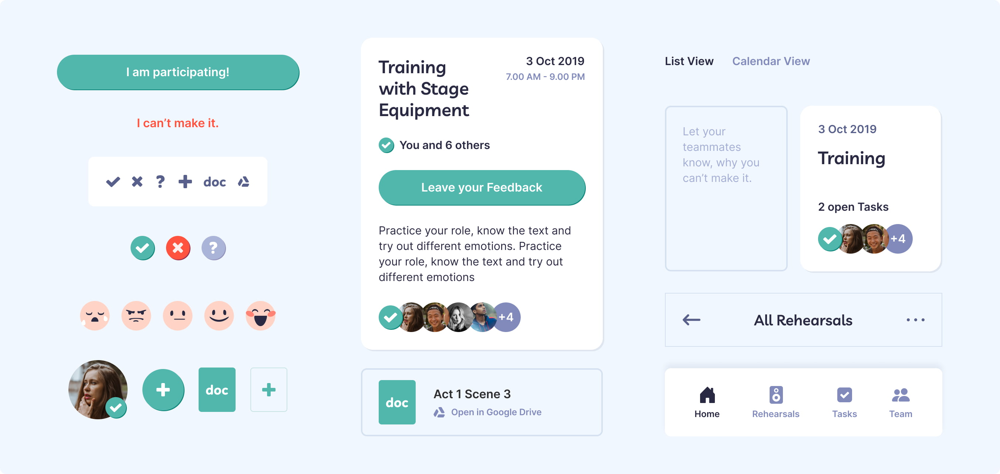

‘Prepio’ Web-App
Organising rehearsals for large groups is challenging and when meeting up, every minute counts. ‘Prepio’ helps team members stay on top of their tasks and assists organisers in planning and creating transparency.
Role
Solo-Student Project for IRONHACK (Quantitative & Qualitative Research, Prototype Design, User Testing, Interface Design)
Background
I created this web-app for my final project at the IRONHACK UX/UI course. The prompt was to create a digital product within two weeks, guided by the Design Thinking process.

Frustrations when planning rehearsals
Stage performances are complex to plan and execute. It can be challenging, even with an amazing team. Some people might drop out of rehearsal last minute or not turn up without notice. There can be too many channels used for communication and a lack of transparency on the agenda. With most group members being passionate about the project and investing much of their spare time, frustrations can be high when things fail.
A survey informed me on how hobby groups organise themselves and what frustrations they experience.
-
85% of people feel like they need to be better prepared for rehearsal and know what to prepare exactly.
-
65% identify the biggest obstacle to be people not attending.
-
50% get frustrated with different levels of commitment of other members.
-
50% feel lost due to an overwhelming amount of different information on different channels.

Excerpts from survey run with Typeform
I had more questions. Such as, why people are late and how they and other team members feel about it, how they prepared their rehearsal and how they handled motivation and commitment in general. So I conducted a couple of interviews. A band organiser, a football team member, a former karate trainer, a dance teacher, various members of different theatre groups and a musician giving gigs with his friends.
They confirmed most of the pain points that participants of the survey had mentioned, but with different levels of frustration. In larger groups that don’t have a supervisor and organise themselves democratically, there is more focus on personal commitment and relationships, which can have a great impact on individual motivation.
It all came down to three major questions:
-
How might we create more transparency about who is attending?
-
How might we keep up the motivation & commitment?
-
How might we create an easy overview on all relevant information to keep everyone on the same page?
To develop good solutions for the group's problems, it is important to understand the dynamics within the team, who the members are, what motivates them and what they need most. The spectrum of personalities within the group is large. These personas focus on the opposite ends of that scale.

Breakdown of 3 Personas
-
Naomi, the exhausted organiser, needs an easy way to keep track of who will be attending the rehearsal, so she can plan the session most effectively.
-
Julie, the busy student member, needs to know what to practise, in case she can not attend. She also needs an easy way to let people know, if she can not make it.
-
Phil, the ambitious idea-powerhouse, needs more transparency to know what he can effectively contribute to the team because he does not want to waste his energy.
Designing solutions, Branding & Usertesting
I believe that creating better transparency on attendees, information and tasks for all members of the group will achieve a better working atmosphere, increase productivity and lead members to be more committed and motivated. I know I am right when more members are attending rehearsals properly prepared and the group feels more united as a team.
Key Hypothesis Statement
When digging into why people are not attending, I found that in 3/4 of all cases, their work, school projects or illness get in the way. Life happens and some things can not be prevented or foreseen. So I made it my commitment to keep members on track with what is happening in the group when they can not attend and to give them a chance to still contribute to the projects.

Collection of UX-Methods used: drafted userflow, sidemap, idea-sketches, empathy-notes and UX canvas
User Flow: How would Naomi use the App?
The Administrator, Naomi, is setting up the group’s profile. She can invite members and in a second step, can create a first rehearsal. The members, Julie and Phil, open the invitation link. They agree to join the group. Now they can set up personal information and notification settings. After successfully creating their profile, they can freely roam the web app.
User Flow: How would Julie use the App?
The member Julie, who can not attend next week’s rehearsal, receives a notification as a reminder of the upcoming rehearsal. She enters the web app, signs off for next week’s rehearsal and adds feedback for last week. Due to their busy lives, Naomi, Julie and Phil most likely need a solution on their phone, for when they are on the train, at break from work or uni or at rehearsal. Julie’s User Flow was the foundation to create a first prototype and do some usertesting. I quickly learned that users would also like to give feedback on past rehearsals. They suggested adding a countdown for upcoming rehearsals or shows as a constant reminder on the homescreen, as well as an overview of upcoming shows.
Paper Prototype & Low-Fidelity digital Prototype
Branding and High-Fidelity Prototype
The brand for this product should be fun and encouraging but at the same time conveyed a feeling of transparency and organisation. It should be young, energetic and positive.

Moodboard
Paragraphs in the app use the easily readable Inter, while the headlines using Livvic are a bit more playful and more organic. A blue palette provides a versatile foundation with a clean and organised feel and is complemented by red and green shades.

Color Palettes & Fonts
Components
The App
In the App, everything is in one place. Members of the team can find an overview on upcoming rehearsals and who is attending. They can sign off, if they can’t make it and can give feedback after the rehearsal. With a task list, they can easily keep track of what to prepare. The design of the app is fun and encouraging but at the same time conveys a feeling of transparency and organisation.

Next Project